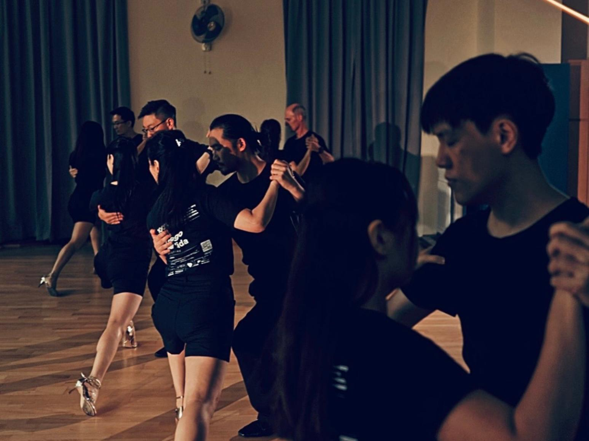
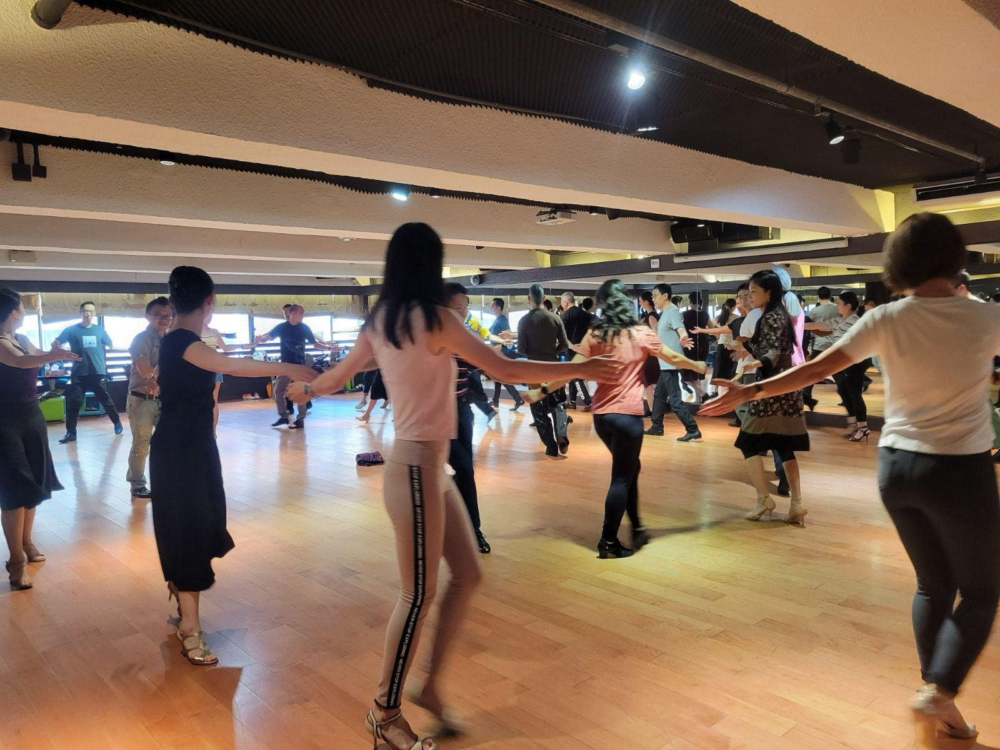
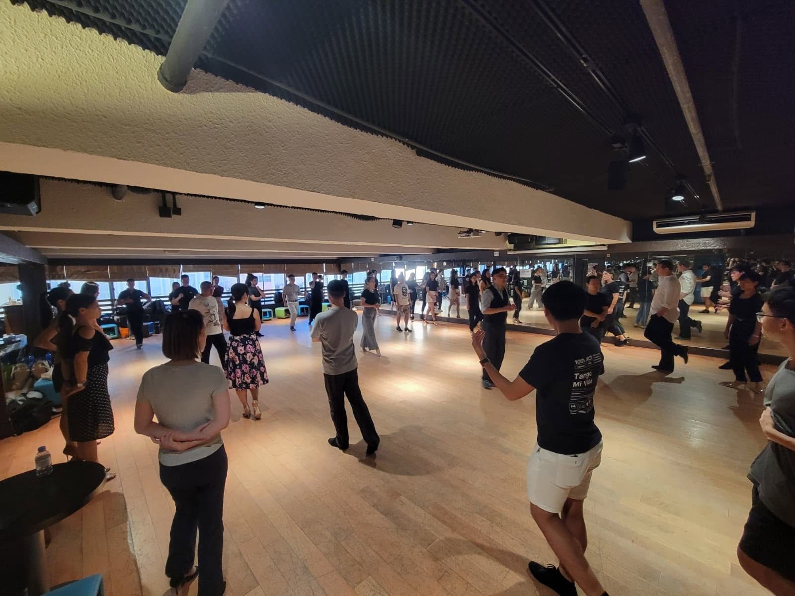
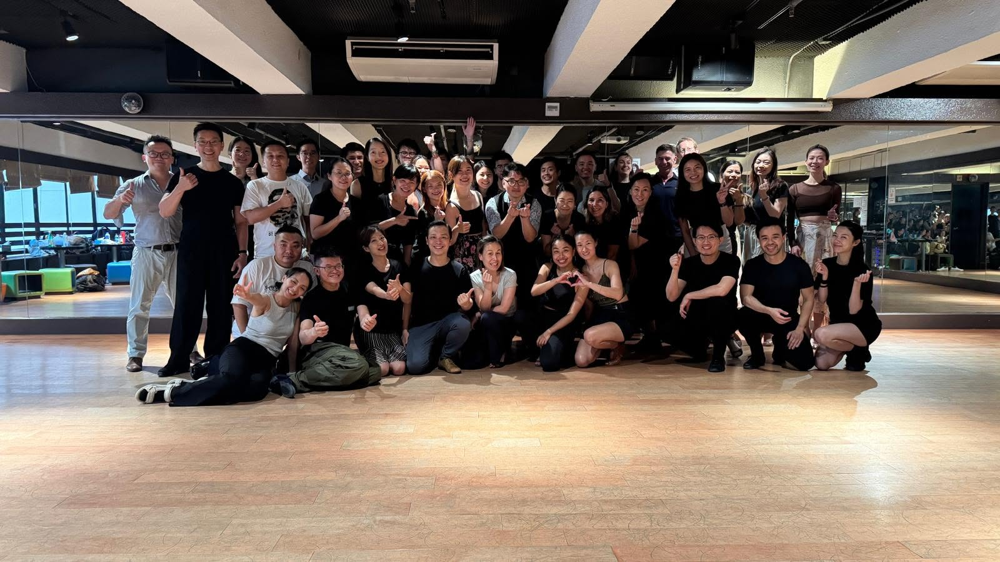
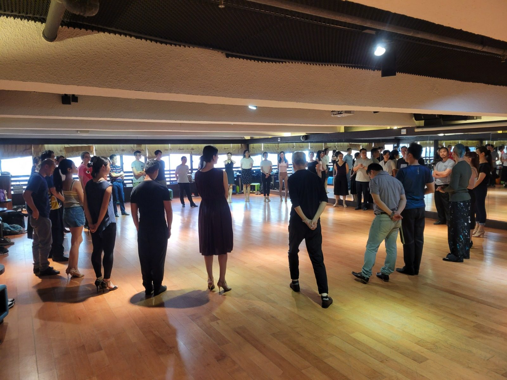
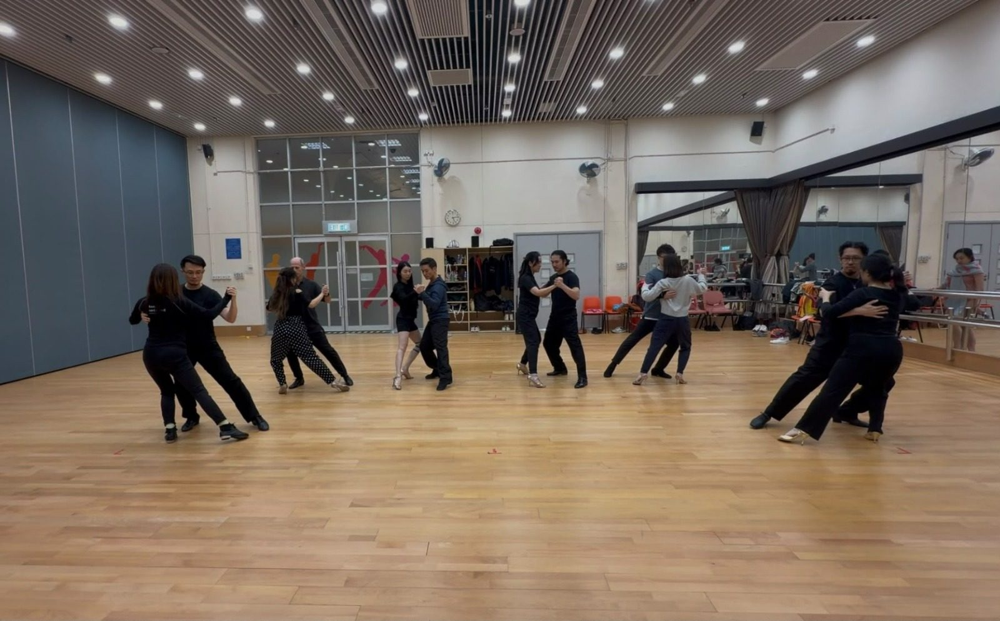

Practice Sessions
Practice sessions that encourage technique development, musical appreciation, considerate floorcraft and community participation.
From practice to stage. In dialogue.
Get in touchThe Hong Kong Argentine Tango Cultural Association is a registered non-profit cultural association dedicated to celebrating and advancing the awareness, understanding and appreciation of Argentine Tango in Hong Kong.
We work to bring the city closer to the tradition — through workshops, practice sessions, performances, exhibitions and cultural exchange activities that present tango as a living art form, not merely a social dance.
Hong Kong's tango community is small, dedicated and cosmopolitan. We aim to provide a welcoming cultural home — where tradition is honoured, dancers of all levels can find a stage, and new generations can discover, practise and carry the art form forward.
Practice sessions that encourage technique development, musical appreciation, considerate floorcraft and community participation.
Classes, workshops and learning activities for different experience levels, including exchanges with local and visiting tango professionals.
Performances, talks and cultural programmes exploring Argentine Tango's artistic heritage, cultural traditions and contemporary expression.
A welcoming gathering point for local dancers, visitors, beginners and experienced practitioners to meet, exchange ideas and learn from one another.
Celebrating the people, learning journeys and shared experiences in Hong Kong's Argentine Tango community.






We'd love to hear from you — whether you're a dancer, a visitor, or simply curious about tango in Hong Kong.